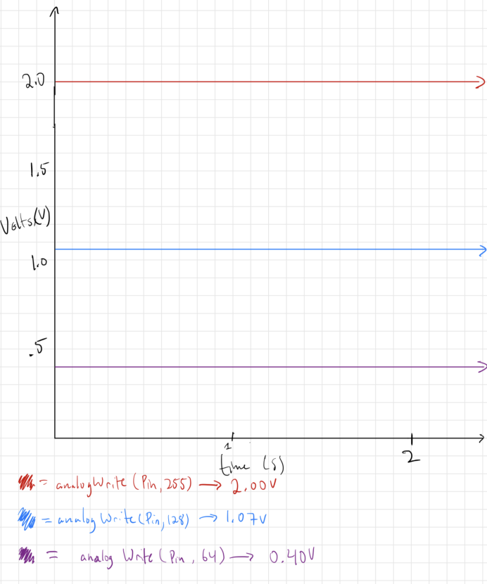

This is a video of my Arduino circuit. There are 3 LEDs that have alternative functions pending the state of the button on the right.
The button on the left stays on and switches to a pulsing state, the middle button starts pulsing and switches off, and the
button on the right starts off and then pulses when the button is pressed.
The Schematic & Calculations:

This is my written out schematic. As shown by my work, I ended up using 220 ohm resistors because I did not have 160 ohm resistors.
I also used the 10k resistor because it acts as a pull down resistor for the button. Work and explanations are present in the image.
Firmware
//Runs this code once upon startup
void setup() {
//for loop sets pins 9-11 all to output
for(int i = 9; i <12; i++){
//i represents each pin, and it gets set to output
pinMode(i, OUTPUT);
}
//set pin 2 to inout
pinMode(2, INPUT);
}
//Loops this code continuously after setup
void loop() {
//if statement for when 2 reads low, does the following:
if(digitalRead(2) == LOW){
//LED on pin 9 is set to low when button is unpressed.
digitalWrite(9, LOW);
//sets pin 11 to HIGH, so its LED always on when button is NOT pressed
digitalWrite(11, HIGH);
//the next two for loops are to get a pulsing effect with LED on pin 10
for(int i =0; i<=255; i+=5){
//does a check to see if button is still unpressed
if(digitalRead(2) != LOW){
//breaks the for loop when button is unpressed so that the pulsing
//stops immediately, rahter than finishing.
break;
}
//sets brightness to i
analogWrite(10,i);
//delay is 50ms
delay(50);
}
//This is the second half of the pulsing, where the LED on pin 10 would dim
for(int i = 255; i>=0; i-=5){
//checks if button is still unpressed
if(digitalRead(2) != LOW){
//breaks the for loop when button is unpressed so that the pulsing
//stops immediately, rahter than finishing.
break;
}
//sets the brightness to i, which is decreasing
analogWrite(10,i);
//delays 50ms to make the pulsing clear
delay(50);
}
//the rest of the cases here are for when the button IS pressed
} else{
//pin 10 is made to turn off entirely.
digitalWrite(10, LOW);
//LED on pin 11 is made to pulse, this loop brightens it
for(int i =0; i<=255; i+=5){
//checks to see if button is still pressed,
//if not, exits the for loop.
if(digitalRead(2) != HIGH){
//break exits the loop
break;
}
//LED on pin 11 is set to brightness of i via analogWrite
analogWrite(11,i);
//within this for loop, I have if-else statement for pin 9 so
//it flashes. This is done via % and i.
if(i%2==0){
//turns pin 9 to high
digitalWrite(9,HIGH);
//opposite else if when i is an odd #
} else{
//pin 9 is set to LOW
digitalWrite(9,LOW);
}
//delays for 50ms to have pulsing effect AND blinking effect
delay(50);
}
//for loop for dimming part of pulsing effect on pin 11
for(int i = 255; i>=0; i-=5){
//checks to see if button is unpressed
if(digitalRead(2) != HIGH){
//exits the loop
break;
}
//sets LED on pin 11 to i brightness via analogWrite
analogWrite(11,i);
//same check from before to ensure light flashes on pin 9
if(i%2==0){
//turns pin 9 to high
digitalWrite(9,HIGH);
//else clause for when i is odd
} else{
//pin 9 is set to low for LED blinking effect
digitalWrite(9,LOW);
}
//delays 50ms for blinking and pulsing effect to be visible
delay(50);
}
}
}
This code has comments on every line that explain what it does, but in general, there are two states for each button so they exibit different behavior
pending the state of the button, being on or off.
Additional Questions
1: Draw a chart where the X axis is time and the Y axis is voltage. Draw 3 lines representing the voltage across an LED with analogWrite(led, 64), analogWrite(led, 128), and analogWrite(led,255).

This is the graph of Volts over time (seconds) for the outlined scenario. These values were attained by a voltmeter.
2: Given your schematic, circuit, and firmware, assuming the only thing that draws current is your LEDs, how long would your circuit run if powered by a 1200 mAh battery?

In my answer, which is explained in detail in the above photo, I cover two possible situations, being both the button unpressed and pressed states of my circuit, with clear assumptons and justifications
for each situation.